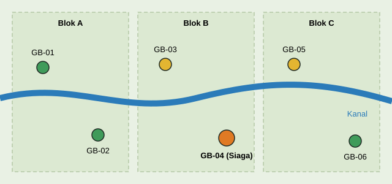

Data Titik Pantau
Halaman ini menampilkan kondisi enam titik pantau pada pembaruan terakhir. Data bersifat simulasi dan disusun untuk memperlihatkan bagaimana informasi pemantauan disajikan kepada warga dan petugas.

Kondisi Terkini
| Kode Titik | Lokasi | Muka Air (cm di bawah permukaan) | Kelembapan Tanah (%) | Status | Pompa |
|---|---|---|---|---|---|
| GB-01 | Blok A, hulu kanal | 18 | 78 | Aman | Mati |
| GB-02 | Blok A, tengah | 22 | 74 | Aman | Mati |
| GB-03 | Blok B, dekat kebun warga | 34 | 61 | Waspada | Mati |
| GB-04 | Blok B, tepi jalan desa | 47 | 42 | Siaga | Menyala |
| GB-05 | Blok C, dekat sekat kanal | 31 | 64 | Waspada | Mati |
| GB-06 | Blok C, hilir kanal | 20 | 76 | Aman | Mati |
Cara Membaca Data
Istilah pada Tabel
- Muka air
- Jarak permukaan air tanah dari permukaan gambut. Semakin besar angkanya, semakin dalam air dan semakin kering lapisan atas gambut.
- Kelembapan tanah
- Persentase kandungan air pada lapisan atas gambut, tempat api biasanya mulai menjalar.
- Status
- Hasil penilaian gabungan seluruh parameter. Penjelasan tiap status ada di halaman Cara Kerja Sistem.
Catatan Penting
- Muka air yang lebih dalam dari 40 cm menjadi tanda awal gambut rawan terbakar.
- Satu parameter saja belum cukup, karena itu status selalu dinilai dari beberapa parameter sekaligus.
- Kondisi di luar keenam titik ini hanya dapat diketahui dari laporan warga.